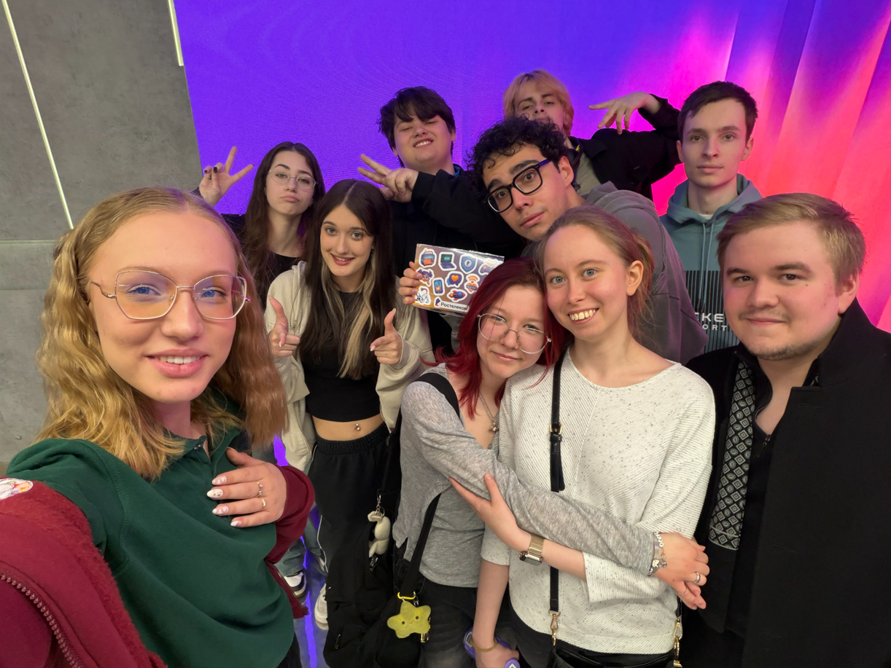
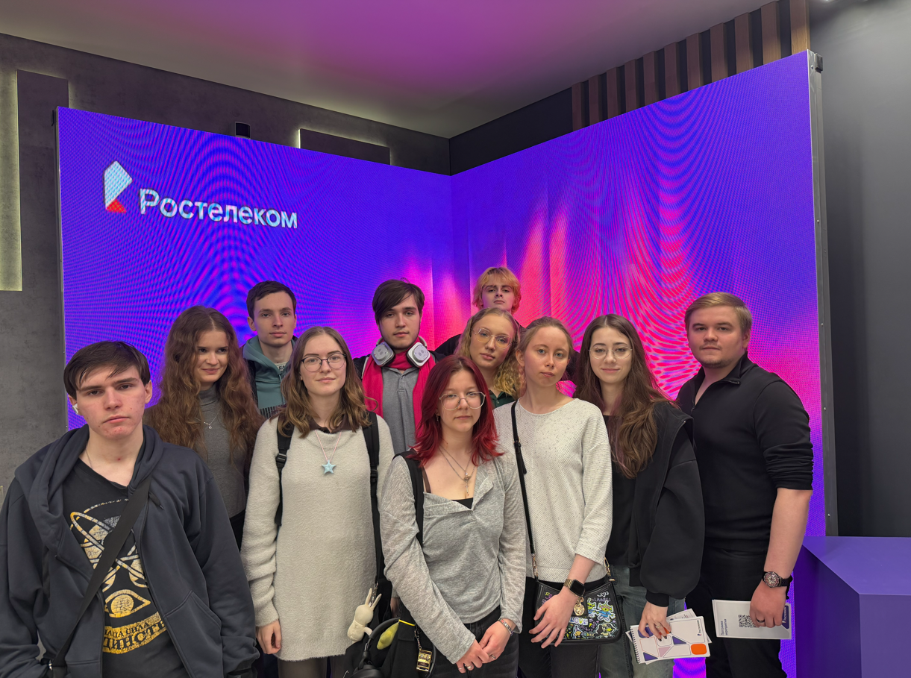
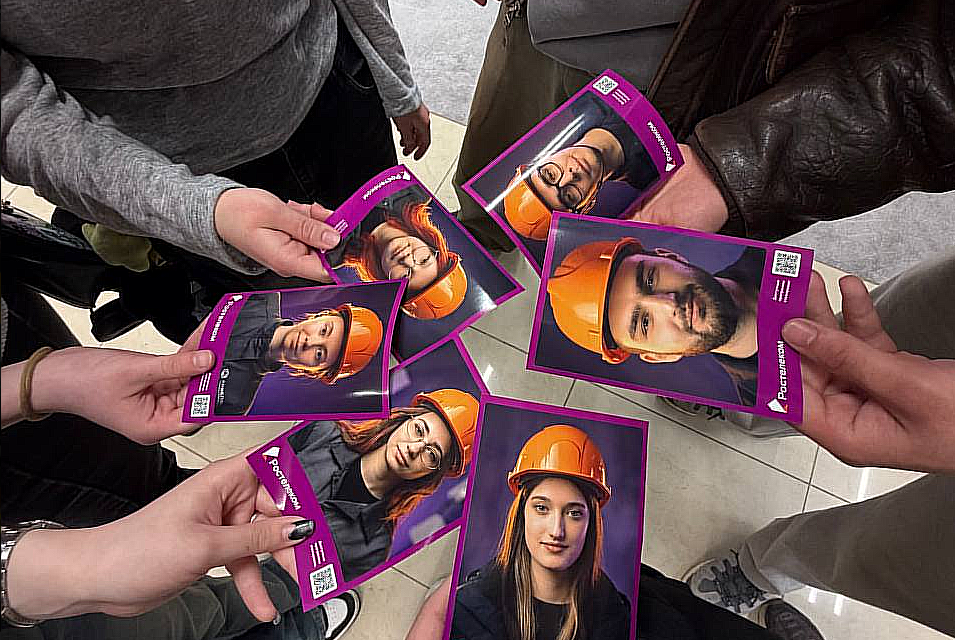

В рамках проектной практики было организовано взаимодействие с партнёрской организацией, связанной с образовательной и цифровой деятельностью.



Пользователь → Организация → Образовательное мероприятие → Получение опыта → Применение в проекте
Полученный опыт был использован при разработке Telegram-бота «Говори. Учись. Играй», особенно в части проектирования образовательных сценариев и пользовательского взаимодействия.